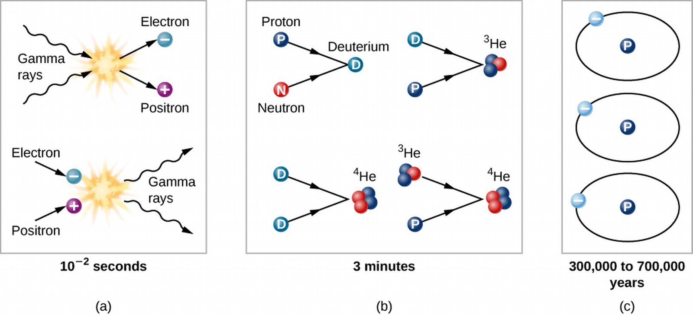

ASTR101 Ch 29-30
Table of Contents
Ch 29 The Big Bang
The Age of the Universe
- Cosmology is the study of the universe.
- The Universe is everything.
- The observable universe is everything that can be observed from Earth that light has had time to reach us from.
- As discussed in Ch. 26, the universe is expanding.
- In his theory of general relativity, Einstein found that the universe must either be expanding or contracting.
- In what he called his "greatest blunder", Einstein added the cosmological constant, which modified the equations to allow a static universe.
- Russian mathematician Friedmann found this to be an unstable equilibrium, and Hubble's study showed the universe to be expanding indeed!
- Einstein's theory of general relativity shows that even an infinite universe can't be constant.
- Recent observations suggest the rate of expansion may be accelerating.
The Hubble Time
- If the universe is presently expanding, it's posited to have come from a hot dense point which exploded in what's called the Big Bang at the beginning of time.
- By measuring the rate of expansion and moving backwards, we can find an age for the universe using the familiar equation
\[v=d/t\] where v is velocity, d distance, and t time, assuming (or approximating with) constant velocity.
- As discussed in Ch. 26, a galaxy's distance and its velocity in the expanding universe are related by
\[v=Hd\]
where Ho is the Hubble constant.
- So the age of the universe T0—known as the Hubble time—is given by
\[T_o=\frac{d}{v}=\frac{d}{H_{o}d}=\frac{1}{H_o}.\]
- With Ho=21 km/s/MLy, To≈14 billion years, with 5% uncertainty.
A Universal Acceleration
- We expect the universe's expansion to slow down (decelerate) due to gravity.
- For decades, astronomers couldn't observe this deceleration because they needed larger telescopes (to measure redshifts of farther galaxies) and a very bright standard candle with enough (known) luminosity to be observed from billions of light-years or more.
- In the 1990s, Astronomers showed that Type Ia supernovae—occuring when a white dwarf eats another star to exceed the Chandrasekhar to explode—are very bright standard bulbs.
- The apparent brightness of the supernova can be calculated based on its distance from us, which can be inferred from the measured redshift.
- In 1998, two groups of researchers found these supernovae to be dimmer than expected by these calculations!
- Whereas if the universe were decelerating, we'd expect far-away supernovae to be brighter!
- The natural first conclusion is that maybe supernovae aren't the reliable standard candles we think they are, or differed from the supernovae we're used to, or were made fainter by extra dust.
- These were shown to be incorrect.
- This calls the Hubble constant into question; maybe the expansion of the Universe is accelerating!
- Later observations support this theory.
- But where does it get its energy, termed dark energy?
- Like dark matter, dark energy has not been detected in Earthly laboratories.
- Dark energy could be associated with emptiness, as Quantum Mechanics informs us that particles flicker in and out of existence everywhere, but QM calculations are off from the energy required for the acceleration of the Universe by 10120.
- So while evidence for dark energy exists, its source is not fully known.
- The theory is that after the big bang, the expansion was slowest because gravity was strongest, then it decelerated, then dark energy took over.

- That means expansion isn't constant, so the result To=1/H0 isn't valid.
- By coincidence, however, the amount of expansion and contraction cancel; To=13.8 Gy≈1/Ho.
- So the Hubble expansion constant changes with time, and the measured value of Ho is for the present expansion.
Comparing Ages
- Recall that globular clusters can be dated using models of stellar evolution; the oldest stars are measured to have formed about 12-13 billion years ago.
- This is confirmed by radioactive dating, using the spectrum of stars and their relative U-238 abundance.
A Model of the Universe
The Expanding Universe
- The Cosmological Principle (see Ch 28) states that the universe is homogeneous (same average makeup in all space) and isotropic (same average makeup in all directions).
- The expansion of the universe causes light to redshift as well, according to how much the space has stretched during its journey.
- We denote the scale factor of the expansion by R for two given times; so if the scale has doubled, R=2.
Models of the Expansion
- Putting aside dark energy and the amount of mass in the universe, we have four models for how the universe might evolve.

- To analyze which model is right, astronomers observe the average density of the universe (accounting for mass as energy's equivalent mass).
- A low average density will will cause negligible deceleration so that the universe effectively expands forever.
- A higher density means higher gravity, so that the expansion stops eventually.
- A very high density could even cause the universe to collapse again.
- We can calculate a critical density for which the universe will expand forever, but any higher denity would stop after some time, and compare this to the calculated density. If the calculated density is higher, then we can conclude that gravity will eventually stop and reverse the expansion of the universe.

Figure 3: 3 is critical, dashed line is empty (a=0).
- A subcritical density (1) is called a closed universe, and would result in a Big Crunch implosion (opposite of the Big Bang explosion).
- We can calculate the critical density through Hubble's constant (see Eg. 29.1) to be around 9.6×10-26 kg/m3 (tiny!).
- Turns out we're well below the critical density, at around 30% of it.
Ages of Distant Galaxies
- Since the Hubble constant is not constant, we have to consider a model to calculate the age of light that has been traveling from a source.
- Some of these are tabulated in Table 29.1 for different redshifts, based on two models.
- For example, if we measure a redshift of z=Δλ/λo=1.0, the light was emitted at time .35To using a model with no dark matter, and .43To using the standard model, where To is the current age of the universe.
The Beginning of the Universe
The History of the Idea
- Belgian priest and cosmologist Georges Lemaître proposed that the matter of the universe came from a primeval atom which went through nuclear fission to create all the atoms in our universe.
- Later, George Gamow suggests a universe with nuclear fusion instead of fusion, and the details are calculated by Ralph Alpher in 1948, in which fundamental particles build up heavy elements through fusion in the Big Bang.
- Today, while we know the former idea to be implausible, the latter is close to the present theory with the caveat that as evidence suggests the universe to have been hot enough for fusion only briefly, resulting in elements only as heavy as lithium.
First Few Minutes
- The universe cools as it expands.

- We can observe the afterglow of the Big Bang when the universe was a few hundred thousand years old.
- In its very early stages, the universe was so hot that it contained mostly radiation (as opposed to matter). Right after, conditions allowed photons of light to turn into particles (just like matter and antimatter annihilate to form light, light can collide to form matter and antimatter, as long as the photons are extremely energetic (like they were around the Big Bang).
The Evolution of the Early Universe
- We don't know the first 10-43 seconds after the Big Bang (this is a very short amount of time!).
- Let's start around .01 s after the Big Bang.

- Right after the Big Bang, the universe can be thought of as a soup of energy and subatomic particles.
- At around .01 s, the temperature was high enough to produce electrons and positrons (no longer neutrons and protons), which in turn would sometimes collide to annihilate back into light. The soup is so dense that even neutrinos (formed earlier) interact in it.
- At around 1 s, the soup has low enough density that neutrinos no longer interact appreciably with matter.
Atomic Nuclei Form
- At around 3 minutes, T=900,000,000 K, so protons and neutrons can combine to deuterium and helium (not unlike the centers of stars). Lithium could also form.
- At around 4 minutes, the temperature has dropped low enough that helium is barely forming, and definitely not forming heavier atoms.
- We've calculated that there is too much Helium in the universe to be explained, so this aspect of the Big Bang theory accomodates this observation.
- In fact, it's estimated that 10 times more helium was created in the first 4 minutes after the Big Bang than in stars over the next 10-15 billion years!
Learning from Deuterium
- We can learn a lot about the early universe from deuterium because all of the deuterium in the universe was formed in the first four minutes after the Big Bang.
- Since the rate of formation is related to the density of the universe at that time, the present deuterium abundance can tell us about the universe's density at the time.
- We can then estimate the present density of the universe from the calculated density at that time.
- This analysis tells us that we don't have enough protons and neutrons for a critical-density universe, by a factor of about 20.
- However, this doesn't incorporate dark matter.
The Cosmic Microwave Background
The Universe Becomes Transparent
- Not until around 400,000 years after the Big Bang were things cool enough for stable atoms of hydrogen and helium to form.
- Electrons settling down to form these atoms meant they weren't light-reflecting free electrons anymore, and the universe finally became transparent.
- Around this time, we can say that matter and radiation decoupled, or stopped interacting as much with each other, because of the lower density and temperatures.
- Since then, electromagnetic radiation could travel throughout the universe. This transition is termed the photon decoupling time.
Discovery of the Cosmic Background Radiation
- Ralph Alpher and Robert Herman worked with George Gamow and concluded that if this model is correct, we should be able to detect the "afterglow" of the hot early universe, which was a reddish fireball.
- They calculated that in its 14 billion-year travel, the light will have undergone an expansion with the expansion of the universe by factor of about 1000, leaving it in the radio wavelength. This is equivalent to the radiation from a blackbody at a temperature only a few degrees above absolute zero.
- Note that this cosmic background should show a blackbody spectrum when corrected for expansion. Moreover, it should be the same in all directions.
- Unfortunately they didn't have the tools to verify their calculations.
- In the mid-1960s, Arno Penzias and Robert Wilson of AT&T's Bell Laboratories built a microwave antenna for their experiments but found some unexpected background noise.
- Even more puzzling, the noise was the same in all directions, not coming from a specific source.
- Perplexed, they cleaned out their telescopes but kept getting the same noise. Eventually they were put in touch with Princeton astronomers recalculating the works of Alpher and Herman for the cosmic microwave background (CMB) which they calculated to be less than 40 K.
- Penzias and Wilson calculated the radio emissions to correspond to a temperature of 3.5 K, later refined by other measurements to be 2.73 K.
- We round this when referring to "the 3-degree microwave background".
- Just before his death in 1966, Lemaître found that his theory had been confirmed!

Figure 6: The outstanding fit of observed CMB to calculated blackbody of 2.73 K.
Properties of the Cosmic Microwave Background
- The uniformity of the CMB is evidence of the universe's isotropy.
- Of course, it's not completely uniform, since in the early universe there were tiny fluctuations in density (from which astronomical structures could evolve).
- Higher early-universe densities turn out to correspond to spots with lower-than-average temperatures.
- Indeed, the CMB exhibits a variance of one part per 100,000. (ie, changes on the order of .001 %).

- Advanced calculations can derive the geometry of spacetime from the CMB map!
- Detailed analysis yields the following:
- The age of the universe is 13.799±.038 billion years (amazing precision!).
- Ho=67.31±.96 km/s/Mpc.
- Dark energy comprises 68.5±13% of the total universe content.
- 31.5±1.3% of the universe is matter.
- Amazing precision!
- Scientists are working on the discrepancy of Ho, which is observed to be 73 km/s/Mpc from redshifts.

What is the Universe Really Made Of?
- Keep in mind (see § 29.6) the Big Bang doesn't account for everything, and the origins of the universe are still in active research.

Ch 30 - Life in the Universe
The Drake Equation
- The Drake Equation breaks down the question "How likely is it we are alone?" based on how many communicating civilizations exist in the Galaxy. It describes that the current number of communicating civilizations in our galaxy N can be approximated by:
\[N=LR_{total},\] where L is the average lifetime of an intelligent, communicating civilization, and Rtotal is the rate of formation of such civilizations.
- The equation isn't as quantitative as it might seem, it's more a mathematical expression of what N might depend on.
- We can further split up Rtotal with
\[R_{total}=R_{star}f_{p}f_{e}f_{l}f_{i}f_{c},\] where Rstar is the rate of star formation, fp the fraction of these stars with planets, fe the fraction of these planetary systems with habitable planets, fl the fraction of these habitable planets that actually support life, fi the fraction of these inhabited planets that develop advanced intelligence, and fc the fraction of these that develop sufficient technology to build radio telescopes and transmitters.
- Let's make some estimates!
- We can find Rstar by researching the rate of star formation in the Milky Way, which turns out to be about Rstar=7 stars/year (source).
- We can estimate the number of stars with planets with the fraction of G and K stars, which can have planets that support life. They comprise about 20% of all stars, so we'll set fp=.2 stars with planets/total stars.
- By analyzing extrasolar planets, (see Ch 21), we find that about 22% of these stars have habitable planets, so we estimate fe=.22 habitable planets/stars with planets.
- The rest of the variables are difficult to estimate.